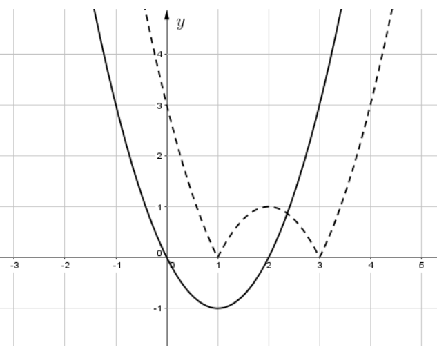
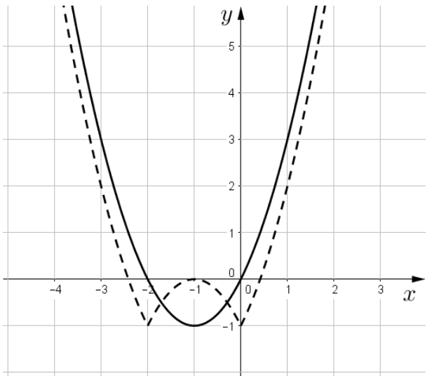

| Caso | Soluzione |
|---|---|
| \(a \ne 0\) | \(x = -\dfrac{b}{a}\) |
| \(a=0,\; b=0\) | \(\mathbb{R}\) (infiniti valori) |
| \(a=0,\; b\ne0\) | \(\emptyset\) (impossibile) |
| \(\Delta\) | Soluzioni |
|---|---|
| \(\Delta > 0\) | \(x_{1,2} = \dfrac{-b \pm \sqrt{\Delta}}{2a}\) — 2 radici distinte |
| \(\Delta = 0\) | \(x = -\dfrac{b}{2a}\) — radice doppia |
| \(\Delta < 0\) | \(\emptyset\) reale — nessuna soluzione reale |
Provare divisori interi del termine noto. Se \(P(r)=0\), dividere il polinomio per \((x-r)\) per abbassare il grado.
| Caso | Risultato |
|---|---|
| \(c < 0\) | \(\emptyset\) |
| \(c = 0\) | \(f(x) = 0\) |
| \(c > 0\) | \(f(x)=c\) oppure \(f(x)=-c\) |
| Caso | Soluzione |
|---|---|
| \(a > 0\) | \(x > -b/a\) |
| \(a < 0\) | \(x < -b/a\) (verso invertito!) |
| \(a=0,\;b>0\) | \(\mathbb{R}\) |
| \(a=0,\;b\le0\) | \(\emptyset\) |
Studia il segno della parabola \(f(x) = ax^2+bx+c\)
| \(a>0\), \(\Delta>0\) | \(a>0\), \(\Delta<0\) | |
|---|---|---|
| \(f(x)>0\) | \(x < x_1\) o \(x > x_2\) | \(\mathbb{R}\) |
| \(f(x)<0\) | \(x_1 < x < x_2\) | \(\emptyset\) |
Per \(a < 0\): invertire i segni delle soluzioni sopra.
| Disequazione | Equivalente (\(c>0\)) |
|---|---|
| \(|f(x)| \le c\) | \(-c \le f(x) \le c\) |
| \(|f(x)| \ge c\) | \(f(x) \le -c\) oppure \(f(x) \ge c\) |
| \(|f(x)| \le c,\; c<0\) | \(\emptyset\) |
| \(|f(x)| \ge c,\; c\le0\) | \(\mathbb{R}\) |
| Trasformazione | Effetto sul grafico |
|---|---|
| \(y = f(x-p)\) | Traslazione orizzontale di \(+p\) (destra) |
| \(y = f(x)+q\) | Traslazione verticale di \(+q\) (alto) |
| \(y = f(-x)\) | Simmetria rispetto all'asse \(y\) |
| \(y = -f(x)\) | Simmetria rispetto all'asse \(x\) |
| \(y = |f(x)|\) | Ribaltare in alto le parti negative |
| \(y = f(|x|)\) | Sostituire \(x<0\) con la riflessione di \(x>0\) |
Moltiplicare numeratore e denominatore per il coniugato.
Equazione biquadratica. Poniamo \(t = x^2\):
\(t^2 - 9t + 14 = 0\)
\(\Delta = 81 - 56 = 25 > 0\)
\(t_{1,2} = \dfrac{9 \pm 5}{2} \Rightarrow t_1 = 7,\; t_2 = 2\)
Entrambi positivi → \(x^2=7 \Rightarrow x = \pm\sqrt{7}\) e \(x^2=2 \Rightarrow x = \pm\sqrt{2}\)
4 soluzioni reali distinte: \(x \in \{-\sqrt{7}, -\sqrt{2}, \sqrt{2}, \sqrt{7}\}\)
Un quadrato è zero quando la base è zero: \(x^5 - 4x^3 = 0\)
Raccoglimento: \(x^3(x^2 - 4) = 0 \Rightarrow x^3(x-2)(x+2)=0\)
Soluzioni: \(x = 0,\; x = 2,\; x = -2\) → 3 radici distinte
Radici di segno opposto ↔ prodotto \(x_1 \cdot x_2 = c/a < 0\) e \(\Delta > 0\).
(B) \(x^2+3x-1=0\): prodotto \(= -1/1 = -1 < 0\) ✓; \(\Delta = 9+4 = 13 > 0\) ✓
Verifica degli altri: (A) \(\Delta = 1-36<0\) (no sol. reali); (C) \(\Delta<0\); (D)(E) prodotto \(>0\) (stesso segno).
Moltiplico numeratore e denominatore per il coniugato \((5+2\sqrt{3})\):
\(x = \dfrac{13(5+2\sqrt{3})}{5^2 - (2\sqrt{3})^2} = \dfrac{13(5+2\sqrt{3})}{25-12} = \dfrac{13(5+2\sqrt{3})}{13} = 5+2\sqrt{3}\)
\(P(x)\) divisibile per \((x-2)\) \(\Leftrightarrow\) \(P(2) = 0\)
\(P(2) = 8 - 4k + 22 - 6 = 24 - 4k = 0\)
\(4k = 24 \Rightarrow k = 6\)

La curva tratteggiata è spostata di 1 unità verso destra rispetto a \(|f(x)|\).
Traslazione destra di \(p\) → sostituire \(x\) con \(x-p\): \(y = |f(x-1)|\)
\(p(3)=2\): \(9a+3b+2=2 \Rightarrow 9a+3b=0 \Rightarrow 3a+b=0\)
\(p(-1)=10\): \(a-b+2=10 \Rightarrow a-b=8\)
Sommando: \(4a=8 \Rightarrow a=2\), \(b=-6\)
\(p(2) = 4(2)+2(-6)+2 = 8-12+2 = -2\)
B) \(x^2+x+1\): \(\Delta=1-4=-3<0\) → sempre \(>0\). Dividere per una quantità sempre positiva non cambia il verso → B ≡ A
C) \(x^2-3x+2=(x-1)(x-2)\): si annulla in \(x=1\) e \(x=2\) → cambia il dominio → C ≠ A, C ≠ B
\(\log_3(2+x)^2 = 6 \Rightarrow (2+x)^2 = 3^6 = 729\)
\(2+x = \pm 27\)
\(x = 25\) oppure \(x = -29\)
Tra le opzioni proposte compare \(x=25\).
Riscriviamo: \(4x^6 - 12x^3 + 9 = 0\). Poniamo \(t = x^3\):
\(4t^2 - 12t + 9 = 0 \Rightarrow (2t-3)^2 = 0 \Rightarrow t = \dfrac{3}{2}\)
\(x^3 = \dfrac{3}{2} \Rightarrow x = \sqrt[3]{\dfrac{3}{2}}\) — unica soluzione reale.
B) \(x^2+1 > 0\) per ogni \(x\) → dividere per quantità sempre positiva non cambia il verso → B ≡ A
C) \(x^2-1\) cambia segno → il verso della disequazione cambia attorno a \(x=\pm1\) → C ≠ A.
A) Numeratore: \(x(x-3)=0 \Rightarrow x=0\) o \(x=3\). Denominatore: \((x-3)(x+3)=0 \Rightarrow x=\pm3\) esclusi.
→ Solo \(x=0\) ammissibile. Soluzioni A = \(\{0\}\)
B) Numeratore: \(x=0\) o \(x=3\). Denominatore: \(\Delta=9-36<0\) → sempre \(\ne0\).
→ Entrambi ammissibili. Soluzioni B = \(\{0,3\}\)
Quindi \(\{0\} \subset \{0,3\}\) → soluzioni di A incluse in soluzioni di B.
Condizioni: \(\begin{cases} 2x+5 \ge 0 \Rightarrow x \ge -5/2 \\ 2x+5 \le 9 \Rightarrow x \le 2 \end{cases}\)
(Il secondo da: quadrare entrambi i lati, validi poiché \(3>0\))
Soluzione: \(-\dfrac{5}{2} \le x \le 2\)
Poniamo \(t=x^2\): \(t^2+8t+15=0\), \(\Delta=64-60=4\)
\(t_{1,2}=\dfrac{-8\pm2}{2} \Rightarrow t_1=-3,\; t_2=-5\)
Entrambe negative! Non esistono \(x^2<0\) in \(\mathbb{R}\) → nessuna soluzione reale.
Numeratore comune: \(x(x-3)=0 \Rightarrow x=0\) o \(x=3\)
A) \(x^3+27=(x+3)(x^2-3x+9)\). Zero del denom: \(x=-3\). Soluzioni: \(\{0, 3\}\)
B) \(x^3-27=(x-3)(x^2+3x+9)\). Zero del denom: \(x=3\) → escluso!
Soluzioni B: \(\{0\}\) — incluse in \(\{0,3\}\)
Eleviamo alla terza potenza (funzione crescente):
\((2\sqrt[3]{5})^3 = 8 \cdot 5 = 40\)
\((3\sqrt[3]{3})^3 = 27 \cdot 3 = 81\)
\((5\sqrt[3]{2})^3 = 125 \cdot 2 = 250\)
Ordine: \(40 < 81 < 250\) → \(2\sqrt[3]{5} < 3\sqrt[3]{3} < 5\sqrt[3]{2}\)
i) \(a^2 = (3-\sqrt5)+(3+\sqrt5)-2\sqrt{(3-\sqrt5)(3+\sqrt5)} = 6 - 2\sqrt{9-5} = 6-2\cdot2 = 2\) ✓ razionale
ii) \(3+\sqrt5 > 3-\sqrt5 \Rightarrow \sqrt{3+\sqrt5} > \sqrt{3-\sqrt5} \Rightarrow a < 0\) ✓
iii) \(a^2=2 \Rightarrow a=-\sqrt{2}\) ≠ intero ✗
Quindi i) e ii) vere, iii) falsa.
B) \(x^4+1 > 0\) per ogni \(x\) → dividere non cambia il verso → B ≡ C
A) \(x^4-1\) cambia segno → non equivalente a C.
Nel punto di intersezione: \(-2a+1 = -2b+7\)
\(-2a+2b = 6 \Rightarrow b-a=3 \Rightarrow b=a+3 > a\)
Dunque \(a < b\).
Radici di segno opposto ↔ prodotto \(c/a < 0\) e \(\Delta > 0\).
(B) \(2x^2-\sqrt5=0\): \(c/a = -\sqrt5/2 < 0\) ✓; \(\Delta = 0+8\sqrt5>0\) ✓
(A): \(\Delta=1-64<0\) — nessuna sol. reale. (D): \(c/a=-2<0\) ✓ ma radici di segno opposto? Sì. Però (B) è più diretto con prodotto \(<0\) e \(b=0\) (radici simmetriche).
\(5a+1 = 5b-3 \Rightarrow 5a-5b=-4 \Rightarrow a-b=-\dfrac{4}{5} < 0 \Rightarrow a < b\)
\(p(2)=4a+2b-1=17 \Rightarrow 4a+2b=18 \Rightarrow 2a+b=9\)
\(p(-3)=9a-3b-1=2 \Rightarrow 9a-3b=3 \Rightarrow 3a-b=1\)
Somma: \(5a=10 \Rightarrow a=2,\; b=5\)
\(p(-5) = 2(25)+5(-5)-1 = 50-25-1 = 24\)
Identico all'esercizio 12. Soluzioni A = \(\{0\}\), Soluzioni B = \(\{0,3\}\).
\(\{0\} \subset \{0,3\}\) → l'insieme di A è incluso in quello di B.
\(x^2+1>0\) sempre → B ≡ A (stesse soluzioni).
\(x^2-1\) cambia segno → C ≠ A.
Se \(a>0\): dividendo per \(a>0\) → \(x > -2/a\) (semiretta destra)
Se \(a<0\): dividendo per \(a<0\), il verso si inverte → \(x < -2/a\) (semiretta sinistra)
L'insieme soluzione è una semiretta, ma non si sa quale senza il segno di \(a\).
Riscriviamo: \(x^6-7x^3-8=0\). Poniamo \(t=x^3\):
\(t^2-7t-8=0\), \(\Delta=49+32=81\)
\(t_{1,2}=\dfrac{7\pm9}{2} \Rightarrow t_1=8,\; t_2=-1\)
\(x^3=8 \Rightarrow x=2\) \(x^3=-1 \Rightarrow x=-1\)
Due soluzioni reali distinte: una positiva (\(x=2\)) e una negativa (\(x=-1\)).
Stessa equazione dell'es. 14. \(t=x^2\): \(t^2+8t+15=0 \Rightarrow t=-3\) o \(t=-5\), entrambe negative → nessuna soluzione reale.
Identico all'es. 2. \(x^3(x-2)(x+2)=0 \Rightarrow x=0,\;x=2,\;x=-2\).
Fattore 1: \(2x^2-11=0 \Rightarrow x^2=\frac{11}{2} \Rightarrow x=\pm\sqrt{\frac{11}{2}}\) — 2 soluzioni reali
Fattore 2: \(x^4-x^2+5=0\). Poniamo \(t=x^2\): \(t^2-t+5=0\), \(\Delta=1-20=-19<0\) → nessuna sol. reale
Totale: esattamente 2 soluzioni reali distinte.
La radice cubica è monotona crescente → possiamo elevare alla terza potenza senza cambiare il verso:
\(8-x^2 \ge 2^3 = 8\)
\(-x^2 \ge 0 \Rightarrow x^2 \le 0\)
L'unico valore reale con \(x^2 \le 0\) è \(x=0\).
Sistema: \(\begin{cases}2x+5\ge0 \\ 2x+5\le9\end{cases} \Rightarrow \begin{cases}x\ge-5/2 \\ x\le2\end{cases}\)
Soluzione: \(-\dfrac{5}{2} \le x \le 2\)
Dominio: \(2x-1 \ge 0 \Rightarrow x \ge 1/2\); \(x \ne 0\). Dominio: \(x \ge 1/2\).
\(\sqrt{2x-1} \ge 0\) sempre. Segno dipende da \(\dfrac{x-1}{x}\).
Per \(x \ge 1/2\): la frazione \((x-1)/x\) è \(\le 0\) quando \(1/2 \le x \le 1\) (numeratore \(\le0\), denominatore \(>0\)).
Attenzione: se \(\sqrt{2x-1}=0\) (cioè \(x=1/2\)) anche il prodotto è 0 ✓

La curva tratteggiata è la riflessione rispetto all'asse \(x\) della parte negativa + traslazione di 1 verso sinistra.
Traslazione sinistra di 1 → sostituire \(x\) con \(x+1\): \(y = |f(x+1)|\)
Radici di segno opposto ↔ \(c/a < 0\) e \(\Delta > 0\).
(B) \(c/a = -\sqrt{5}/2 < 0\) ✓; \(\Delta = 0+8\sqrt{5}>0\) ✓ → radici \(x = \pm\sqrt{\sqrt{5}/2}\), effettivamente di segno opposto.